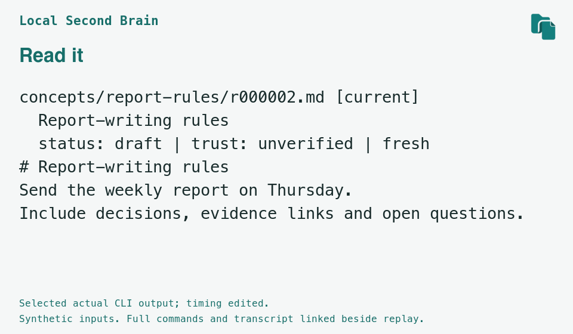

Saved note
Inspect saved source
What your agent reads next time
Point your agent at this knowledge folder. It can search for this note, read it with its source, draft the next report from the saved rules, and flag anything that needs checking.
Your own knowledge library, with sources attached and notes ready to reuse.
Save useful project rules, prior research, and reasons for decisions as notes with their sources. For the next task, an agent you authorize finds and reads the relevant notes and works from them with your new material; you set the goal and review the result.
Instead of gathering scattered research again and re-explaining the report rules, ask your agent for this week's draft: it reads the saved criteria and research, combines them with this week's material, and you review what changed.
In a new conversation or with a different agent, point it at the saved decision and its reason and continue from there instead of rebuilding the background from scratch.
Instead of relying on a lone summary or hunting for the same sources again, open the saved sources and earlier note versions to check the reasoning and update only what needs changing.
Start the next task with useful background and criteria already at hand.
A report rule changes from Friday to Thursday. Open the note, inspect its source, and compare the saved versions.
Illustrative browser explanation of CLI files. This is not a shipped CLI GUI or a live agent chat. All sample text is synthetic and prepared; no model generated it.
Loading sample / 예제 불러오는 중…
Point your agent at this knowledge folder. It can search for this note, read it with its source, draft the next report from the saved rules, and flag anything that needs checking.
These sample notes are drafts with unverified trust: no review is recorded. “Fresh” only means its deadline has not passed at the sample date, 28 October 2026. At or after 1 January 2030 it is stale. These labels do not verify facts.
The source files and CLI output stay in their original English when you switch language.
Watch an actual CLI run save a note, find it again, and compare the changed rule.
Selected actual CLI output; timing edited; full transcript linked below. Temporary paths are normalized. Synthetic prepared inputs; no model calls.
Open static poster
Notes stay as Markdown. Captured sources keep their original bytes. Choose which files to give your next agent.
The current product is an early-alpha CLI. It stores notes, searches exact words, and keeps revisions; an agent you authorize does the reading and writing. It has no built-in memory, model integration, or semantic search.